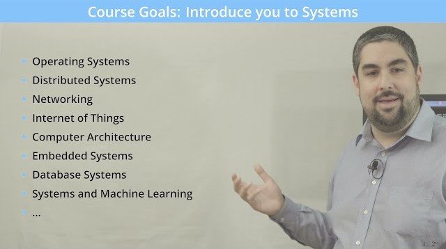
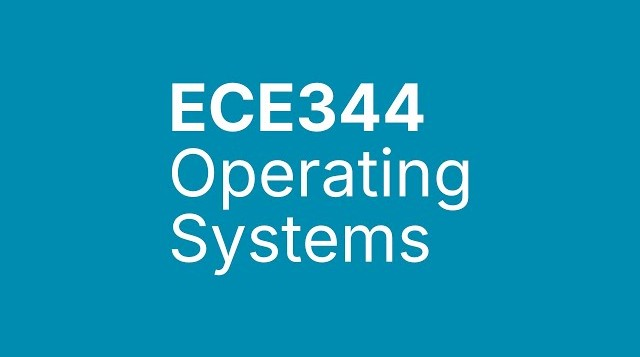

Books

★
★
★
★
☆
Author: Andrew S. Tanenbaum
Pages: 1072
This edition of the global bestseller integrates the latest
developments in operating systems technologies, including updated
material on Linux, Windows, and real-time and multimedia systems.
Price: €87.74

★
★
★
★
☆
Authors: Daniel P. Bovet, Marco Cesati
Pages: 765
The new edition of Understanding the Linux Kernel guides you through
the most important data structures, algorithms, and programming
tricks used in the kernel. It offers invaluable insights for those
wanting to understand how computing systems really work.
Price: €38.79

★
★
★
★
☆
Author: Maurice J. Bach
Pages: 471
This book describes the internal algorithms and structures of the
UNIX® operating system and how they relate to the programmer
interface, based on UNIX System V Release 2 supported by AT&T, with
features from Release 3.
Price: €59.11

★
★
★
★
☆
Athour: William Stallings
Pages: 779
This book covers the concepts, structure, and mechanisms of
operating systems. Stallings clearly and comprehensively presents
the nature and characteristics of modern operating systems,
including important programming projects and step-by-step online
support with CD/Rom resources.
Price: €72.97
Lectures

University of Waterloo, Canada
Instuctor: Ali Mashtizadeh
★
★
★
★
☆
Number of lectures: 12
Total Duration: 9 hours, 17 minutes, 31 seconds
Description:
An introduction to the fundamentals of operating system function,
design, and implementation. Topics include concurrency,
synchronization, processes, threads, scheduling, memory management,
file systems, device management, and security.

University of Wisconsin-Madison
Instuctor: Andrea C. Arpaci-Dusseau
★
★
★
★
☆
Number of lectures: 26
Total Duration: 28 hours, 17 minutes, 26 seconds
Description:
This course will introduce you to the the broad field of operating
systems. Operating systems include a wide variety of functionality.
This is an introductory course and topics we will cover include
basic operating system structure, process and thread synchronization
and concurrency, file systems and storage servers, memory management
techniques, process scheduling and resource management, and
virtualization. The learning outcomes for this course are that at
the end of the course you will be able to: Explain the fundamental
types of operating system abstraction including processes,
synchronization, virtual memory and persistence. Design and
implement system libraries and kernel calls, which are mechanisms
provided to user to access and develop new operating system
functionality. Assess system performance and explain the impact of
applying various algorithms and data structures to the complex
operation of an operating system.

University of Toronto
Instuctor: Jon Eyolfson
★
★
★
★
☆
Number of lectures: 22
Total Duration: 18 hours, 12 minutes, 12 seconds
Description:
In this course are discussed the principles in the design and
implementation of operating systems software. Topics include:
Introduction to operating systems concepts, process management,
memory management, file systems for both hard drive and SSD, and
virtualization. The laboratory exercises will require implementing a
simple, but functional operating system from ground up.

University of Massachusetts Amherst (UMass Amherst)
Instuctor: Sean Barker
★
★
★
★
☆
Number of lectures: 23
Total Duration: 26 hours, 32 minutes, 31 seconds
Description:
This course will provide an introduction to operating system design
and implementation. The operating system provides a well-known,
convenient, and efficient interface between user programs and the
bare hardware of the computer on which they run. The operating
system is responsible for allowing resources (e.g., disks, networks,
and processors) to be shared, providing common services needed by
many different programs (e.g., file service, the ability to start or
stop processes, and access to the printer), and protecting
individual programs from one another. Particular emphasis will be
given to three major OS subsystems: process management (processes,
threads, CPU scheduling, synchronization, and deadlock), memory
management (segmentation, paging, swapping), file systems, and
operating system support for distributed systems.